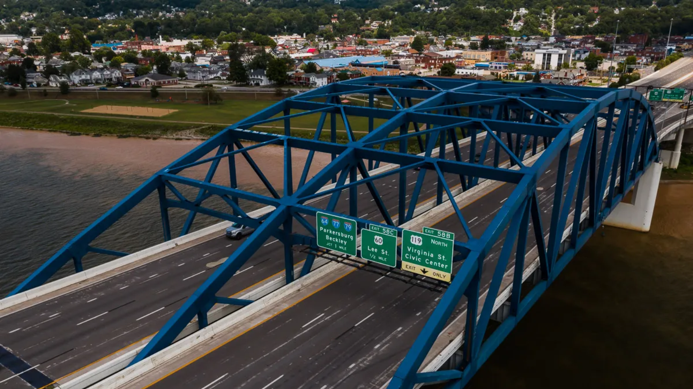
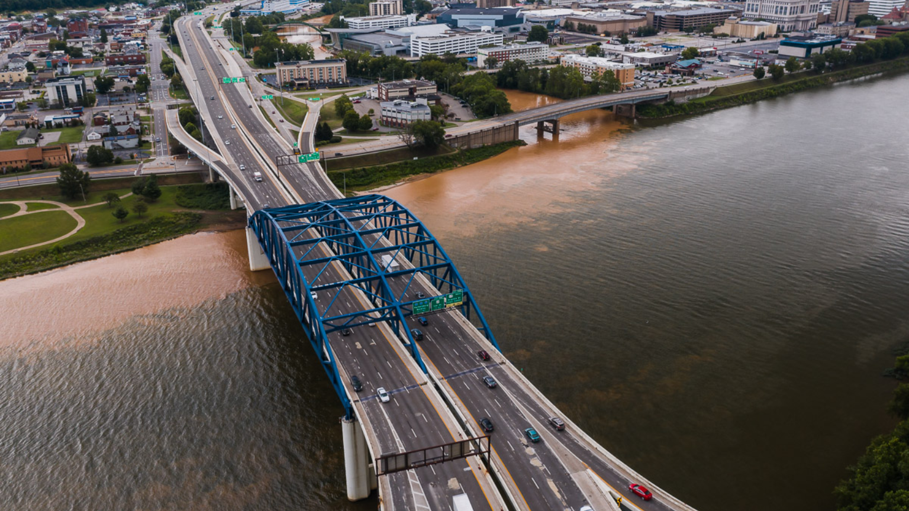
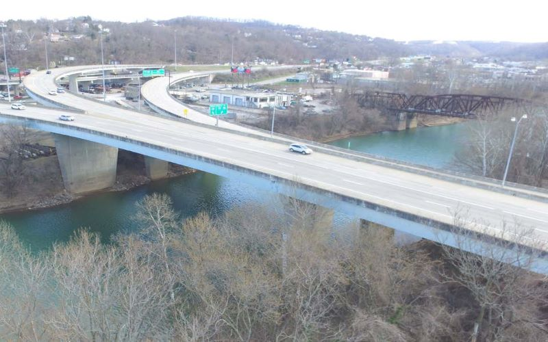
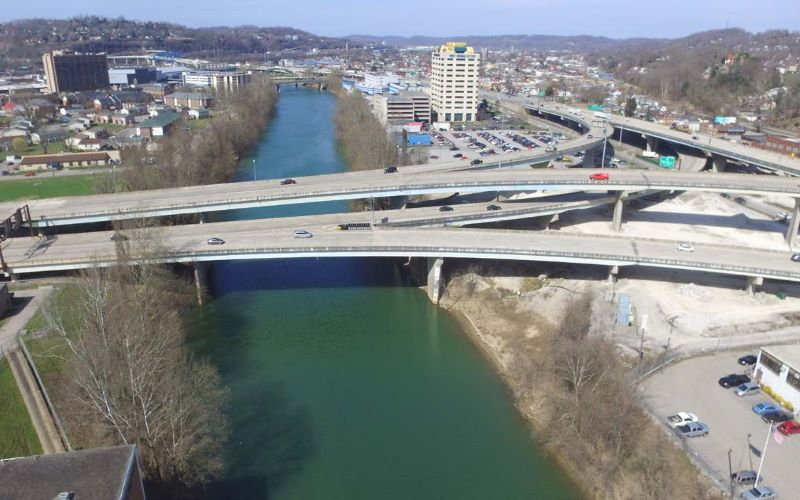

-
The Carter Bridge/Brooks Street Interchange Project, funded by the West Virginia
Division of Highways, is a bridge painting and repair project of fifteen (15) bridges on
the I-77/I-64 corridor in Charleston, WV. The project footprint includes the bridges
associated with the I-77/I-64 interchange (Bigley Ave. bridges/ramps) on the north side
of downtown Charleston and stretches east across the Elk River and Kanawha Valley
Railroad to the I-77/I-64 ramps for Leon Sullivan Way and Brooks Street.
The project was let on the February 8th, 2022, WVDOH Project Letting for a price of $27,420,996.50 to Blastech Enterprises, Inc. from Baltimore, MD. The project was officially awarded on March 1, 2022, and the contractor was given the Notice to Proceed on March 21, 2022. The Carter Bridge/Brooks Street Interchange is expected to be performed over the next 20 months with an original contract completion date of November 17, 2023.
The original bridges were built in the early 1970’s and are due for maintenance to keep them functioning properly, extending their useful lifespan for years to come. In addition to cleaning and painting the structural steel of the fifteen (15) bridges, the project will make various improvements to the existing bridges that include: concrete crack and spall repairs, concrete protective coating, bolt replacements, repair and cleaning of bridge drainage, bridge joint cleaning, access door repairs, parapet plate armoring, fence replacement, electrical and lighting repairs, and erosion repairs. The existing pedestrian bridge over I-77/I-64 and staircases will be removed as part of the project.
With the majority of the project work to be performed underneath the bridges, the traveling public should expect various roadway closures and detours to local streets as well as partial closures to parking lots under the bridges associated with the project. Additionally, nightly lane closures and various ramp closures along the I-77/I-64 corridor will occur within the project limits.




